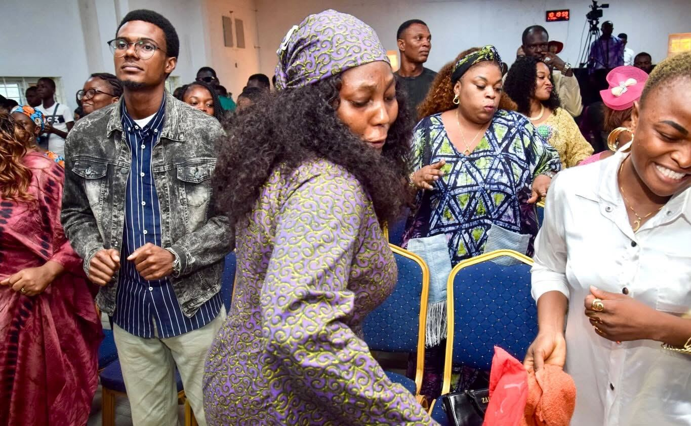
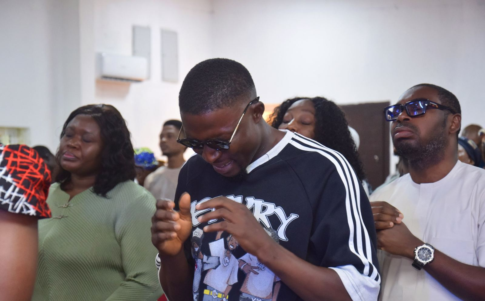
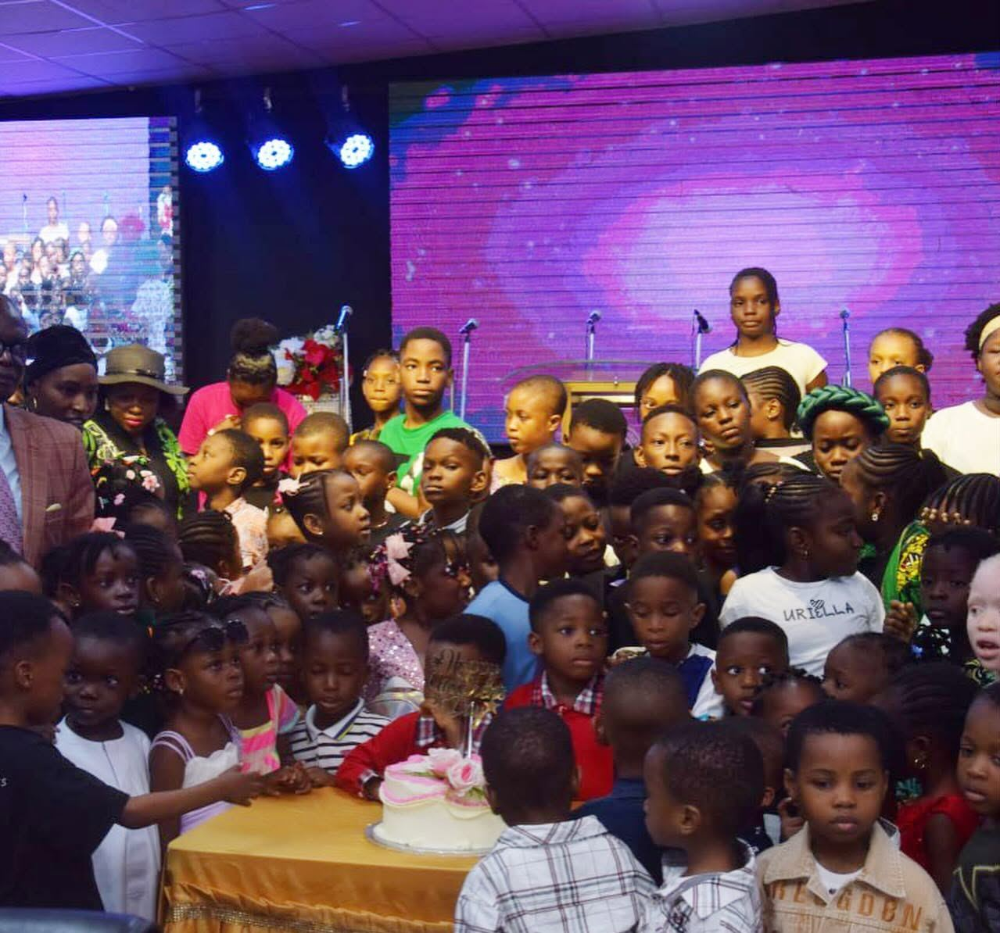

Find your people
Ministries
Church is more than Sunday. Each ministry at Fuller's Field is a smaller family where you can grow, be known and serve.
Choose a ministry
Tap a ministry to see photos, meeting times and how to join.

Sundays 9:30 – 11:00am
Hope of Nations
Our youth and young adults ministry: worship, the Word and real conversations.
Visit the Hope of Nations page
Every Sunday
Children's Church
A safe, joyful place for children to meet Jesus every Sunday.
Visit the Children's Church pageWomen 60 and above
Wise Women
Fellowship, prayer and the wisdom of women who have walked with God.
Visit the Wise Women pageMen 60 and above
Wise Men
Brotherhood, mentoring and prayer for the fathers of our church.
Visit the Wise Men pageWant to serve too?
Join one of our departments. See all departments
Become a worker
Every worker at Fuller's Field starts with Workers in Training (WIT), the RCCG course that grounds you in the faith and prepares you to serve.
- Worship with usBe part of the Fuller's Field family on Sundays.
- Register for WITSign up at the parish office or by email.
- Join a departmentPick where you want to serve and start after training.